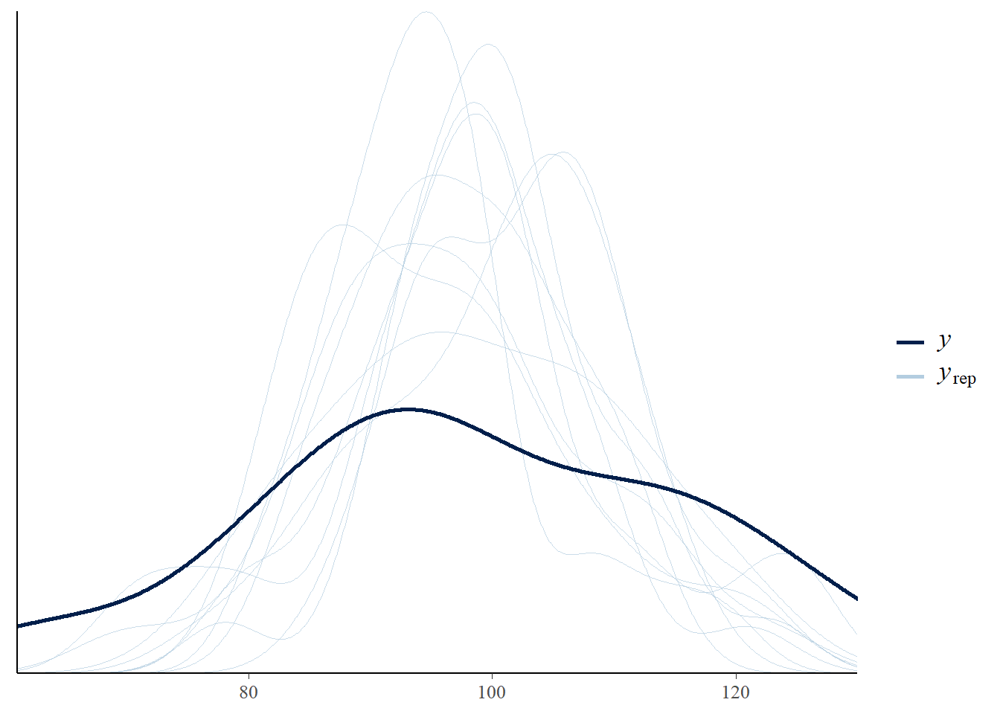

v ggplot2 3.3.6 v purrr 0.3.4
v tibble 3.1.7 v dplyr 1.0.9
v tidyr 1.2.0 v stringr 1.4.0
v readr 2.1.2 v forcats 0.5.1
Warning: package 'ggplot2' was built under R version 4.1.3
Warning: package 'tibble' was built under R version 4.1.3
Warning: package 'tidyr' was built under R version 4.1.3
Warning: package 'readr' was built under R version 4.1.3
Warning: package 'dplyr' was built under R version 4.1.3
-- Conflicts ------------------------------------------ tidyverse_conflicts() --
x dplyr::filter() masks stats::filter()
x dplyr::lag() masks stats::lag()
library(brms)
Warning: package 'brms' was built under R version 4.1.3
Loading required package: Rcpp
Warning: package 'Rcpp' was built under R version 4.1.3
Loading 'brms' package (version 2.17.0). Useful instructions
can be found by typing help('brms'). A more detailed introduction
to the package is available through vignette('brms_overview').
Attaching package: 'brms'
The following object is masked from 'package:stats':
ar
library(bayesplot)
Warning: package 'bayesplot' was built under R version 4.1.3
This is bayesplot version 1.9.0
- Online documentation and vignettes at mc-stan.org/bayesplot
- bayesplot theme set to bayesplot::theme_default()
* Does _not_ affect other ggplot2 plots
* See ?bayesplot_theme_set for details on theme setting
library(ProbBayes)
Warning: package 'ProbBayes' was built under R version 4.1.3
Loading required package: LearnBayes
Attaching package: 'LearnBayes'
The following object is masked from 'package:brms':
rdirichlet
Loading required package: gridExtra
Attaching package: 'gridExtra'
The following object is masked from 'package:dplyr':
combine
Loading required package: shiny
Warning: package 'shiny' was built under R version 4.1.3
5.1 Poisson Modelleren
Hier observeren we tellingen \(y_1,...,y_n\) verdeeld volgens een Poisson distributie met gemiddelde \(\lambda\).
Schrijf het model in termen van het logaritme van het gemiddelde:
\[\theta=log\lambda\] is het model met \(N(\mu,\sigma)\) prior op de log gemiddelde parameter \(\theta\).
5.2 Leren over website tellingen
In het ProbBayes pakket, omvat de variabele Count in de dataset web_visits tellingen van dagelijkse bezoeken aan een blog_website. We zijn geïnteresseerd in leren van het gemiddelde aantal bezoeken \(\lambda\).
We plaatsen een \(N(0, 10)\) prior op \(\theta=log\lambda\) die de beperkte informatie van de prior over de lokatie van deze parameter uitdrukt.
5.2.1 Bayesiaans fitten
In deze run van de brm() functie gaan we uit van Poisson sampling en een normaal prior met gemiddelde 0 en standaard deviatie 10 geplaatst op het loggemiddelde \(\theta=log\lambda\).
fit <-brm(Count ~0+ Intercept, data = web_visits,family = poisson,refresh =0,prior =prior(normal(0, 10), class = b,coef ="Intercept"))
Compiling Stan program...
Start sampling
We bevestigen de prior met de prior_summary() functie.
prior_summary(fit)
prior class coef group resp dpar nlpar lb ub source
(flat) b default
normal(0, 10) b Intercept user
De summary() functie geeft de samenvattingen van de posterior van \(\theta\).
summary(fit)
Family: poisson
Links: mu = log
Formula: Count ~ 0 + Intercept
Data: web_visits (Number of observations: 28)
Draws: 4 chains, each with iter = 2000; warmup = 1000; thin = 1;
total post-warmup draws = 4000
Population-Level Effects:
Estimate Est.Error l-95% CI u-95% CI Rhat Bulk_ESS Tail_ESS
Intercept 4.58 0.02 4.54 4.62 1.00 1431 1936
Draws were sampled using sampling(NUTS). For each parameter, Bulk_ESS
and Tail_ESS are effective sample size measures, and Rhat is the potential
scale reduction factor on split chains (at convergence, Rhat = 1).
De posterior_samples() functie geeft de posterior simulaties van \(\theta\).
post <-posterior_samples(fit)
Warning: Method 'posterior_samples' is deprecated. Please see ?as_draws for
recommended alternatives.
Feitelijk is dit een slecht model voor deze gegevens. Men kan dat zien door verschillende posterior predictive checks.
De pp_check() toont dichtheidsplots van 10 gerepliceerde datasets van de posterior voorspellende verdeling. Merk op dat deze gerepliceerde datasets er anders uitzien (kleinere variatie) dan de geobserveerde data.
pp_check(fit)
Using 10 posterior draws for ppc type 'dens_overlay' by default.

De pp_check() functie zal een posterior voorspellende controle implementeren met behulp van verschillende controle functies. Hier gebruiken we \((y^_,s)\) als een bivariate controlefunctie. De scatterplot geeft de waarden van \((y^_,s)\) weer. Hieruit blijkt dat de waargenomen gegevens meer variatie vertonen dan het Poisson model voorspelt.
pp_check(fit, type ="stat_2d")
Using all posterior draws for ppc type 'stat_2d' by default.